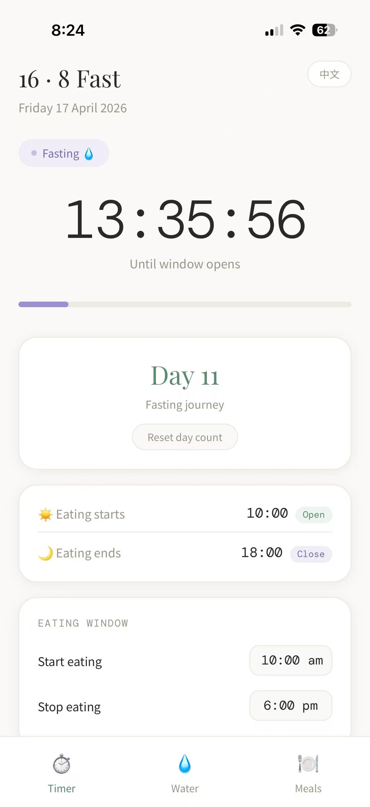
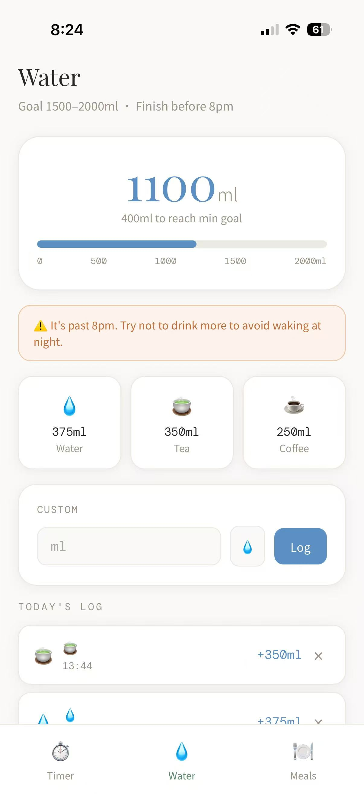
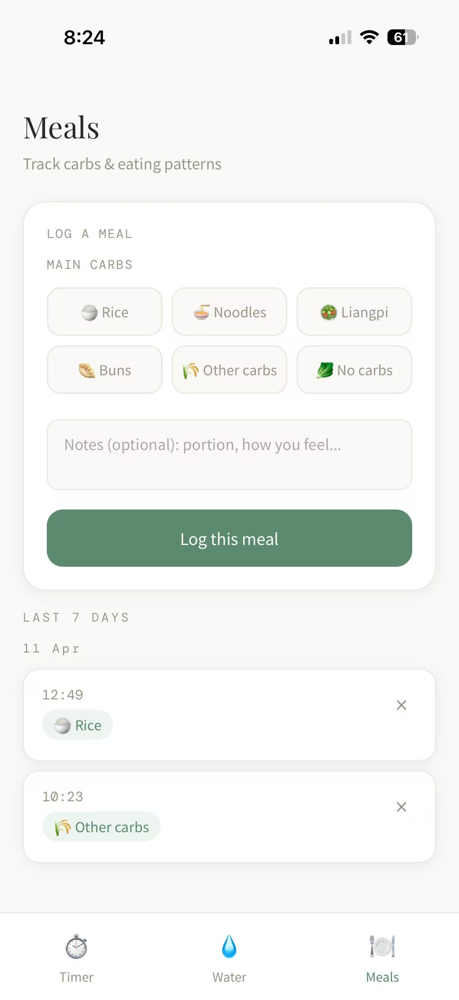

A private-by-design fasting tracker. No sign-up, no server, no third-party access. Your data lives in your browser and nowhere else. / 无需注册，数据不离设备。
I'm tired of fasting apps that force phone number verification and real-name registration. I don't need social feeds or premium subscriptions. I just want a clean 16:8 timer.
我厌倦了市面上那些必须绑定手机号、动辄要求实名注册的轻断食 App。我不需要各种社交广场或付费订阅，我只想要一个纯净的 16:8 计时器。
Set your eating window start and end time. The timer shows exactly where you are in your fast or eating window, with a progress bar and a running day counter since you started.
Quick-add buttons for common amounts (250ml, 500ml, etc.) plus a custom input. Tracks daily total against your target. Resets automatically each day. 每日饮水记录。
Log each meal with a carb level selection (none / low / medium / high) and optional notes. Keeps a running history so you can see patterns over days. 碳水化合物记录。



Download fasting.html from GitHub and open it in your browser. No install, no server, no dependencies — it runs as a local file. Bookmark it for easy access. / 下载 fasting.html，直接用浏览器打开，收藏书签即可。
On the Timer tab, find the "Eating Window" section. Set your preferred start and end times — for example 10:00 AM to 6:00 PM. The tool will calculate your fasting and eating windows automatically. This is the only setup step. / 设置进食开始和结束时间，之后无需再动。
After setup, just open the bookmark each day. The timer runs against the current time — no manual start/stop needed. Log water and meals as you go. The day counter tracks your streak automatically. / 设置一次，之后傻瓜操作。
Your client data is stored in your browser's localStorage. To switch devices or back up, use the built-in export function.
您的客户数据存储在浏览器本地。如需更换设备或备份，请使用内置导出功能。
If this tool saved you time or added value to your workflow, consider buying me a coffee. It fuels the next update.
如果这个工具为您节省了时间或创造了价值，欢迎请我喝杯咖啡。这是我持续更新的动力。
DISCLAIMER / 免责声明:
This tool is a completely free, open-source resource provided for personal use and informational purposes only. It does not constitute medical, health, or professional advice. Use at your own risk.
本工具为完全免费的开源资源，仅供个人参考使用，不构成任何医疗、健康或专业建议。请根据自身情况酌情使用，风险自担。